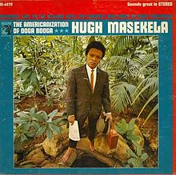
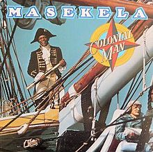
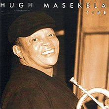

.jpg)



Hugh Masekela Tribute
May his soul rest in jazz heaven
Hugh Masekela was a world-renowned flugelhornist, trumpeter, bandleader, composer, singer and defiant political voice who remained deeply connected at home, while his international career sparkled. He was born in the town of Witbank, South Africa in 1939. At the age of 14, the deeply respected advocator of equal rights in South Africa, Father Trevor Huddleston, provided Masekela with a trumpet and, soon after, the Huddleston Jazz Band was formed. Masekela began to hone his, now signature, Afro-Jazz sound in the late 1950s during a period of intense creative collaboration, most notably performing in the 1959 musical King Kong, written by Todd Matshikiza, and, soon thereafter, as a member of the now legendary South African group, the Jazz Epistles (featuring the classic line up of Kippie Moeketsi, Abdullah Ibrahim and Jonas Gwangwa).
In 1960, at the age of 21 he left South Africa to begin what would be 30 years in exile from the land of his birth. On arrival in New York he enrolled at the Manhattan School of Music. This coincided with a golden era of jazz music and the young Masekela immersed himself in the New York jazz scene where nightly he watched greats like Miles Davis, John Coltrane, Thelonious Monk, Charlie Mingus and Max Roach. Under the tutelage of Dizzy Gillespie and Louis Armstrong, Hugh was encouraged to develop his own unique style, feeding off African rather than American influences – his debut album, released in 1963, was entitled Trumpet Africaine.
In the late 1960s Hugh moved to Los Angeles in the heat of the ‘Summer of Love’, where he was befriended by hippie icons like David Crosby, Peter Fonda and Dennis Hopper. In 1967 Hugh performed at the Monterey Pop Festival alongside Janis Joplin, Otis Redding, Ravi Shankar, The Who and Jimi Hendrix. In 1968, his instrumental single ‘Grazin’ in the Grass’ went to Number One on the American pop charts and was a worldwide smash, elevating Hugh onto the international stage.
His subsequent solo career has spanned 5 decades, during which time he has released over 40 albums (and been featured on countless more) and has worked with such diverse artists as Harry Belafonte, Dizzy Gillespie, The Byrds, Fela Kuti, Marvin Gaye, Herb Alpert, Paul Simon, Stevie Wonder and the late Miriam Makeba.
In 1990 Hugh returned home, following the unbanning of the ANC and the release of Nelson Mandela – an event anticipated in Hugh’s anti-apartheid anthem ‘Bring Home Nelson Mandela’ (1986) which had been a rallying cry around the world.
In 2004 Masekela published his compelling autobiography, Still Grazing: The Musical Journey of Hugh Masekela (co-authored with D. Michael Cheers), which Vanity Fair described thus: ‘…you’ll be in awe of the many lives packed into one.’
In June 2010 he opened the FIFA Soccer World Cup Kick-Off Concert to a global audience and performed at the event’s Opening Ceremony in Soweto’s Soccer City. Later that year he created the mesmerizing musical, Songs of Migration with director, James Ngcobo, which drew critical acclaim and played to packed houses.
That same year, President Zuma honoured him with the highest order in South Africa: The Order of Ikhamanga. 2011 saw Masekela receive a Lifetime Achievement award at the WOMEX World Music Expo in Copenhagen, the first of many. Numerous universities, including the University of York and the University of the Witwatersrand have awarded him honorary doctorates. The US Virgin Islands proclaimed ‘Hugh Masekela Day’ in March 2011, not long after Hugh joined U2 on stage during the Johannesburg leg of their 360 World Tour. U2 frontman Bono described meeting and playing with Hugh as one of the highlights of his career.
Never one to slow down, Bra Hugh toured Europe with Paul Simon on the Graceland 25th Anniversary Tour and opening his own studio and record label, House of Masekela at the age of 75. His final album, No Borders, picked up a SAMA for Best Adult Contemporary in 2017.
Continuing a busy international tour schedule, Hugh used his global reach to spread the word about heritage restoration in Africa – a topic that remained very close to his heart. He founded the Hugh Masekela Heritage Foundation in 2015 to continue this work for generations to come.
“My biggest obsession is to show Africans and the world who the people of Africa really are,”
Masekela confided – It was this commitment to his home continent that propelled him forward since he first began playing the trumpet.
reference:http://hughmasekela.co.za/biography/